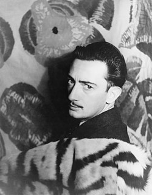

<html>
    <head>

    </head>
    <body style="background-color: antiquewhite;">
        <footer>
            <strong><h1>სალვადორ დალი ბიოგრაფია</h1></strong>
            
<p>სალვადორ დალი დაიბადა 1904 წლის 11 მაისს ესპანეთში, კერძოდ კატალონიურ ქალაქ ფიგერასში, ნოტარიუსის ოჯახში. სახვით<br>
     ხელოვნების შესწავლა დაიწყო მუნიციპალურ სამხატვრო სკოლაში. 1914 წლიადან 1918 წლამდე<br>
      იზრდებოდა მშობლიურ ქალაქში, მარისტების ორდენის აკადემიაში.<br>

    1916 წელს არდადეგებზე გაემგზავრა ქალაქ კადაკესში, სადაც მოდერნისტულ ხელოვნებას ეზიარა. დალის პირველი<br>
     პერსონალური გამოფენა 1919 წელს მოეწყო. 1921 წელს მამამ გადაწყვიტა ჭაბუკი სალვადორი მადრიდში გაეგზავნა, რათა მას სწავლა <br>
     სან–ფერნანდოს აკადემიაში გაეგრძელებინა. დედაქალაქში დალიმ გაიცნო ესპანური ხელოვნების ისეთი წარმომადგენლები, როგორიცაა ლუის <br>
     ბუნიუელი, ფედერიკო გარსია ლორკა და პედრო გარფიასი.<br>
    
    მადრიდში დალი საკუთარ ნახატებში კუბიზმისა და დადაიზმის შერწყმას ცდილობს. 1926 წელს სალვადორს აკადემიიდან <br>
    
    რიცხავენ ქედმაღლობისა<br>
     და პედაგოგებისადმი დაუდევრობის ბრალდებით. იმავე წელს, დალი პირველად მიემგზავრება პარიზში, სადაც პაბლო პიკასოს ეცნობა. საკუთარი<br>
      სტილის ძიებაში დალი 1920–იანი წლების ბოლოს პიკასოსა და ხუან მიროს შემოქმედების ზეგავლენით ჰქმნის საკუთარ ნამუშევრებს. 1929 წელს <br>
      ლუის ბუნიუელთან ერთად მონაწილებს სიურეალისტური ფილმის „ანდალუსიური ძაღლის“ შექმნაში. სწორედ მაშინ ხვდება პირველად იგი თავის <br>
      მომავალ მეუღლე გალას (ელენე დიაკონოვა), რომელიც იმ დროისთვის ფრანგი პოეტის პოლ ელუარის მეუღლე იყო.<br>
    
    დალის ნახატები სხვადასხვა გამოფენებზე მონაწილეობენ. ის პოპულარული ხდება. 1929 წელს დალი ანდრე ბრეტონის მიერ შექმნილ <br>
    სიურრელისტების ჯგუფში ერთიანდება.
    
    1934 წელს დალი ოფიციალურად ქორწინდება გალასთან. იმავე წელს ის პირველად ეწვია ამერიკის შეერთებული შტატებს.<br>
    
    ესპანეთში სამოქალაქო ომისა და ფრანკოს მიერ ძალაუფლების ხელში ჩაგდების მერე დალი უთანხმოებაში მოვიდა „სიურეალისტების<br>
     ჯგუფთან“, რომლებიც მემარცხენე აზრებს იზიარებდნენ. დალი გარიცხეს ჯგუფიდან. სწორედ მაშინ წარმოთქვა მან: „სიურეალიზმი – ეს <br>
     მე ვარ“. ამასთან დაკავშირებით ანდრე ბრეტონმა დალის უწოდა „Avida Dollars“, შექმნა რა მისი სახელისა და გვარისგან ანაგრამა.<br>
    
    მეორე მსოფლიო ომის დაწყებისთანავე დალი მეუღლესთან ერთად ამერიკის შეერთებული შტატებში გადაბარგდა,<br>
     სადაც მან ცხოვრების 9<br>
     წლიანი პერიოდი დაჰყო,1940 წლიდან 1948 წლის ჩათვლით. 1942 წელს იგი გამოსცემს ავტობიოგრაფიულ რომანს <br>
     „სალვადორ დალის საიდუმლო ცხოვრება“. მისი ლიტერატურული ცდები ისეთივე წარმატებული აღმოჩნდა, როგორც<br>
      მხატვრული – წიგნი ბესტსელერად იქცა.<br>
    
    ესპანეთში დაბრუნების შემდეგ დალი მშობლიურ ფიგერასში დასახლდა. 1981 პარკინსონის დაავადებით სნეულდება. <br>
    1982 წელს გარდაიცვალა გალა.
    
    სალვადორ დალი გარდაიცვალა 1989 წლის 23 იანვარს. იგი ფიგერასში, საკუთარი სახლის ეზოშია დასაფლავებული.</p>
        </footer>
    </body>
</html>


